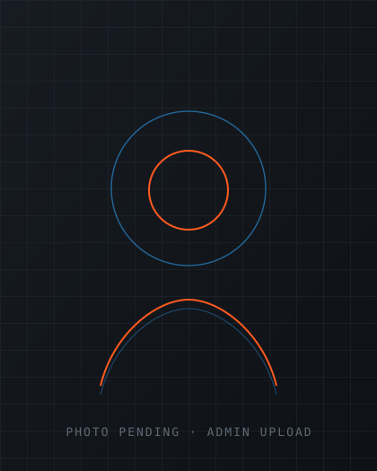
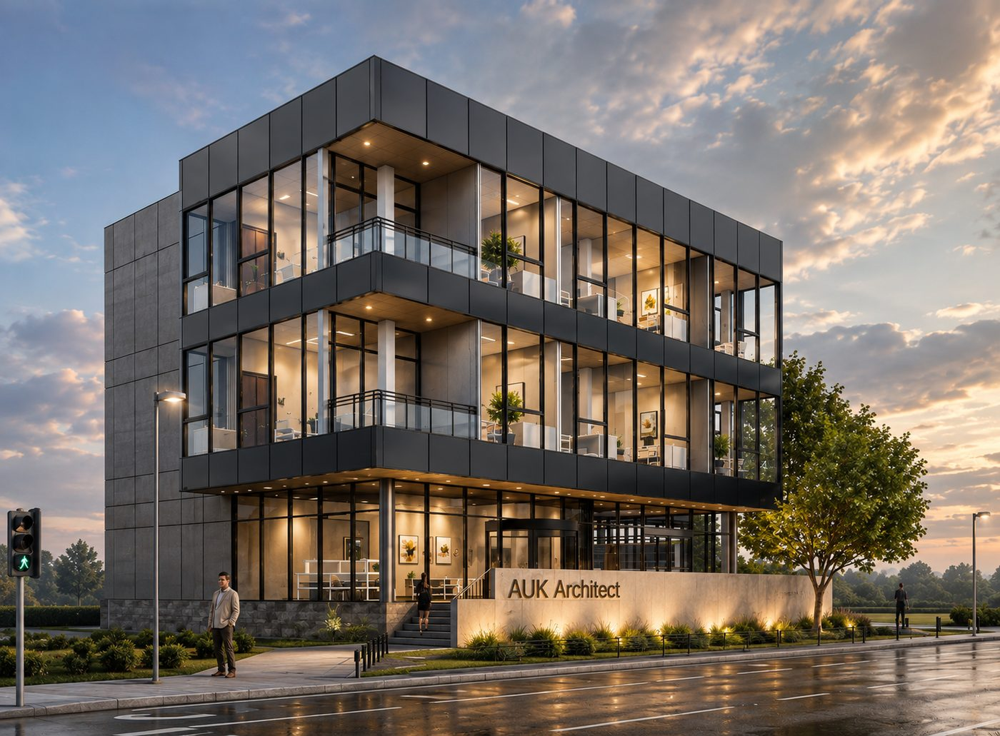

Amir Ullah Khan
builds digital twins of the structures you rely on.
Transforming complex structures into precise digital twin models across BIM coordination, structural analysis, and on-site quality control.

Watch a model come together.
Move your cursor across the frame to scrub through a 2D drawing becoming a fully coordinated 3D BIM model.
One building, modeled in every layer.
From bare frame to finished facade, this is what a coordinated BIM workflow actually looks like.

Where I add the most value on site.
3D BIM Modeling
Federated architectural and structural models in Revit, built to LOD spec and ISO 19650 information standards.
Structural Analysis
Modeling and verification in ETABS, SAFE, and SAP2000, from gravity systems to full seismic checks.
Site Coordination & QC
Field QA/QC, material testing, and contractor coordination to keep execution aligned with design intent.
Clash Detection
Navisworks-driven coordination that catches conflicts between disciplines before they reach the field.
A few structures I’ve helped model and build.
Selected work spanning BIM coordination, structural QA/QC, and research-grade FEM modeling.